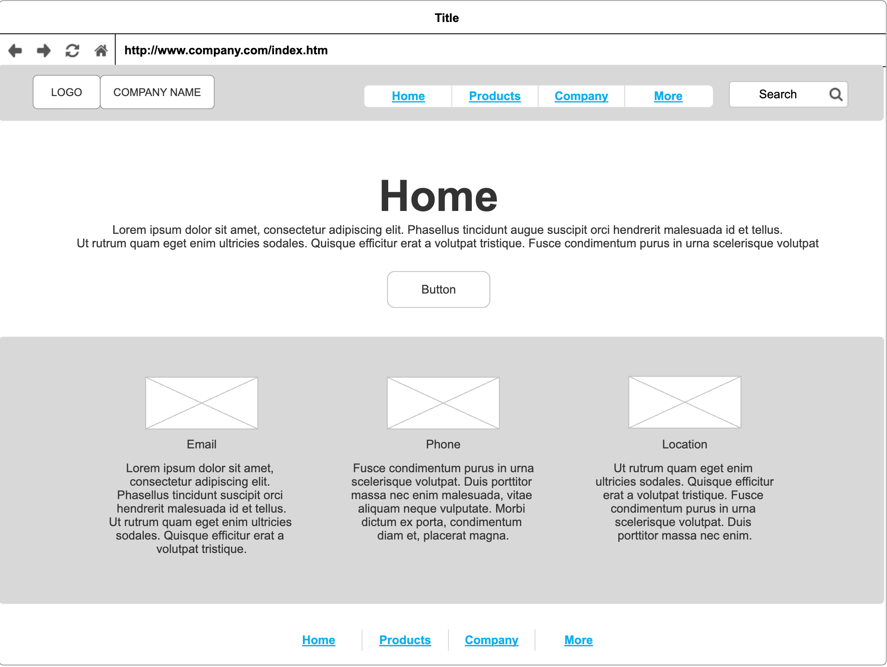
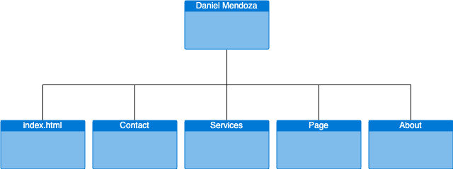

Project 1
Audit Connect for Daniel Mendoza
Project Overview
- website intended to advertise Daniel Mendoza as an auditor.
- Intended users of this website will be recruiters looking for aspiring Auditors.
- The Content Will Include a home page introducing the site, an about page describing who Daniel is, and his aspirations, and a few pages detailing his experience.
Client Information
- Name: Daniel Mendoza
- Organization Association: N/A
- Email: dmendoza@gmail.com
Wireframe
Site Map
Page 1 - Home Page
- Name: Home Page
- Purpose: Introduce visitors to Daniel Mendoza's auditing services, encouraging them to explore further.
- Audience: Potential clients and employers.
- Content: Welcome message, featured services (links to respective service pages), client testimonials, contact button.
- Data Entry: None.
- Validations: N/A.
- Buttons/Links/Dropdowns: Contact button, service links.
- Actions: Clicking on service links navigates users to respective service pages. Clicking the contact button opens the contact form.
- Special Notes: The page layout should be visually appealing, guiding users to explore services and contact Daniel easily.
Page 2 - About Daniel Page
- Name: About Daniel Page
- Purpose: Provide detailed information about Daniel Mendoza’s professional background and skills.
- Audience: Potential clients and employers.
- Content: Resume, skills, education details.
- Data Entry: Professional experience, skills, education information.
- Validations: N/A.
- Buttons/Links/Dropdowns: N/A.
- Actions: None.
- Special Notes: The page should emphasize Daniel’s qualifications and expertise to build trust among visitors.
Page 3 - Services Page
- Name: Services Page
- Purpose: Describe various auditing services offered by Daniel, showcasing specialization areas and case studies.
- Audience: Potential clients.
- Content: Service details, specialization areas, case study summaries.
- Data Entry: Service descriptions, case study information.
- Validations: N/A.
- Buttons/Links/Dropdowns: Links to detailed case studies.
- Actions: Clicking on case study links displays detailed case study information in a pop-up modal.
- Special Notes: Each service description should be concise yet informative, focusing on benefits to potential clients.
Page 4 - Portfolio Page
- Name: Portfolio Page
- Purpose: Showcase past auditing projects with visuals and detailed outcomes.
- Audience: Potential clients and employers.
- Content: Project descriptions, visuals (graphs, charts), outcomes.
- Data Entry: Project details, visuals, outcomes.
- Validations: N/A.
- Buttons/Links/Dropdowns: Clickable project links leading to detailed project pages.
- Actions: Clicking on project links navigates users to detailed project pages with comprehensive information and visuals.
- Special Notes: Visuals should be visually appealing and easy to understand, highlighting successful audit outcomes.
Page 5 - Contact Page
- Name: Contact Page
- Purpose: Enable visitors to get in touch with Daniel for inquiries and services.
- Audience: All visitors.
- Content: Contact form (name, email, message, service inquiry), contact information (email, phone), social media links.
- Data Entry: Name, email, message, service inquiry.
- Validations: Ensure all required fields are filled before submission.
- Buttons/Links/Dropdowns: Submit button, social media icons.
- Actions: Clicking the submit button validates the form and, if successful, sends the inquiry to Daniel’s email. Clicking social media icons opens respective social media profiles.
- Special Notes: The form should have clear instructions, and error messages in case of validation failures should be user-friendly.